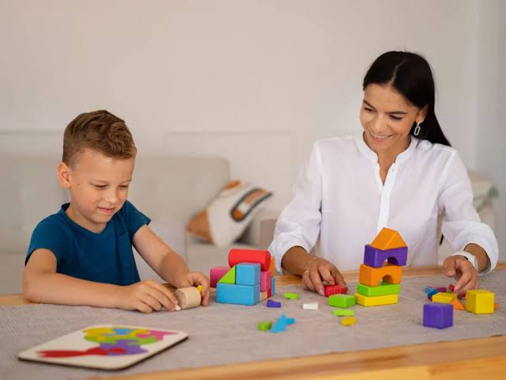
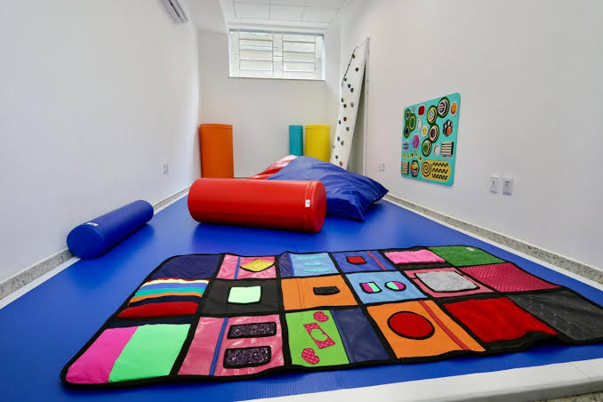
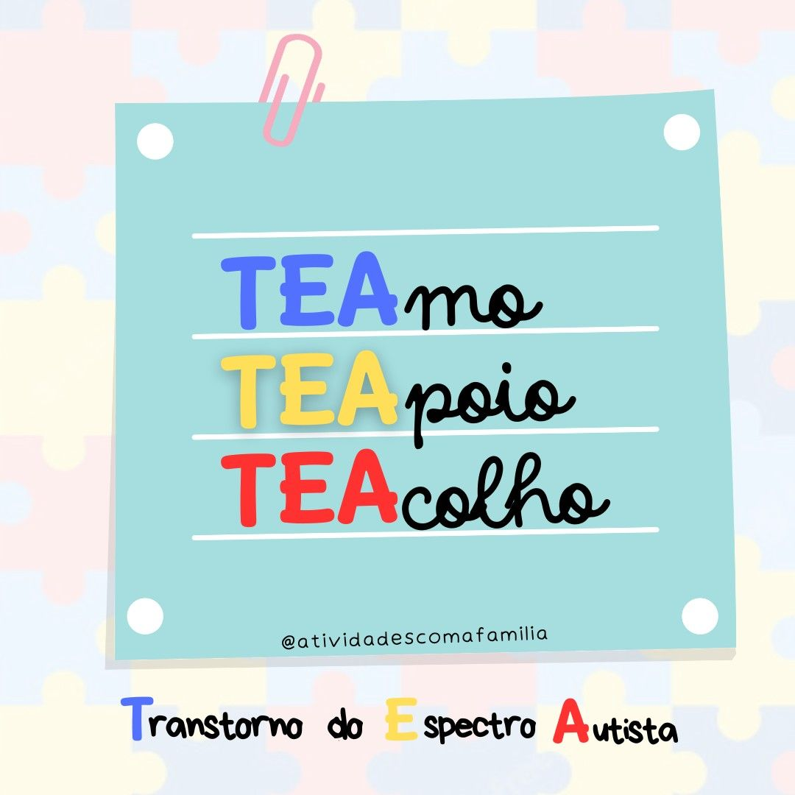

SOBRE NÓS

O projeto nasceu da união de seis estudantes do curso Java do programa ProaProfissão — Gabriel Carneiro, Fernanda Ribeiro, Diego Armando, Fernando Vieira, Davi Ramos e Matheus de Souza.
Movidos pelo desejo de aplicar a tecnologia em favor de causas de alto impacto social, identificamos uma dor profunda vivida por muitas famílias: a extrema dificuldade de encontrar, avaliar e agendar profissionais realmente qualificados e especializados no atendimento ao Transtorno do Espectro Autista (TEA).
Combinando nossos aprendizados, unimos forças para projetar e codificar uma plataforma web robusta, segura e intuitiva. O site foi concebido para funcionar como uma ponte de confiança, conectando famílias e cuidadores a terapeutas, psicólogos, fonoaudiólogos e educadores especializados.
Cada linha de código reflete o compromisso do grupo em transformar o aprendizado do curso em uma solução real, promovendo inclusão, acessibilidade e apoio a quem mais precisa.

Clique aqui
Inclusão é respeitar as diferenças!
Amor e aceitação em cada etapa da jornada.
Rede de suporte para famílias e profissionais.
Espaço seguro focado em inclusão real.
NOSSOS COMPROMISSOS
Tecnologia a serviço da inclusão.
Conexão direta entre famílias e especialistas.
Plataforma intuitiva e ao alcance de todos.